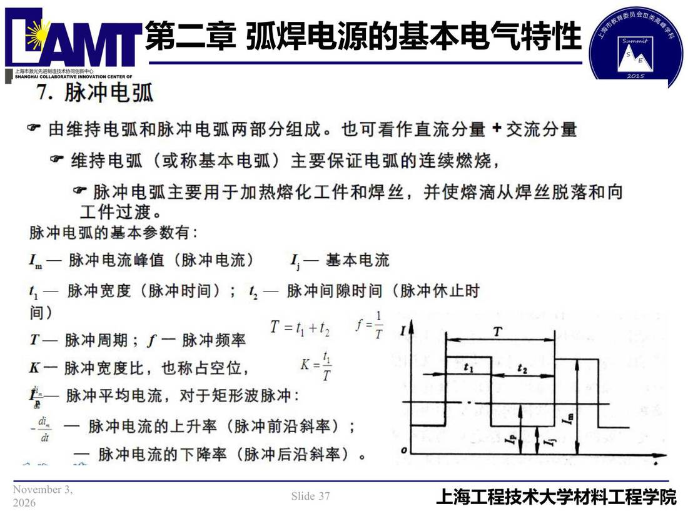

02 第2章 基本电气特性/p037 7.脉冲电弧
p037 7.脉冲电弧
📄 原文：📄 弧焊电源 课件（PDF 第 37 页）（幻灯片 37/273；PDF 第 37 页）
7.脉冲电弧

讲义原文
本页在课件中是纯图文版式（无文字层），内容以页图与下面的 OCR 文本为准。
页面文字（OCR 机读，可能有错字，以页图为准）
7.脉冲电弧 • 由维持电弧和脉冲电弧两部分组成。也可看作直流分量+交流分量 。 维持电弧（或称基本电弧）主要保证电弧的连续燃烧， • 脉冲电弧主要用于加热熔化工件和焊丝，并使熔滴从焊丝脱落和向 工件过渡。 脉冲电弧的基本参数有： 1。— 脉冲电流峰值（脉冲电流） 【—基本电流 —脉冲宽度（脉冲时间）；ち— 脉冲间隙时间（脉冲休止时 1=ち十ち j= T—脉冲周期；f—脉冲频率 K—脉冲宽度比，也称占空位， -脉冲平均电流，对于矩形波脉冲：